Jonathan MirCha - @jonmircha
Jonathan MirCha - @jonmircha
Curso HTML5 Avanzado: Progressive Web Apps
Curso HTML5 Avanzado
Progressive Web Apps
de EDteam por @jonmircha
Progressive Web Apps (PWA's)
¿Qué son PWA's?
Son experiencias que combinan lo mejor de la Web y lo mejor de las apps nativas.
¿Qué son PWA's?
Están disponibles para los usuarios a partir de la primera visita en una pestaña del navegador y no requieren instalación.
¿Qué son PWA's?
A medida que el usuario compila progresivamente una relación con la app o con el paso del tiempo, se hace más y más poderosa.
¿Qué son PWA's?
Se carga rápidamente, incluso con redes débiles, envía notificaciones push relevantes, tiene un ícono en la pantalla principal y se carga como experiencia de pantalla completa y de primer nivel.
¿Qué son PWA's?
Características PWA's
Progresiva: funciona para todos los usuarios, sin importar la elección de navegador, porque está construida con mejora progresiva como principio central.
Características PWA's
Adaptable: se adapta a cualquier factor de formulario, sea escritorio, móvil, tablet o lo que venga en el futuro.
Características PWA's
Independiente de la conectividad: mejorada con service workers para trabajar sin conexión o con redes de mala calidad.
Características PWA's
Estilo App: al usuario le parece una app con interacciones y navegación estilo app, porque está construida con modelo de shell de app.
Características PWA's
Fresca: siempre actualizada gracias al proceso de actualización de service worker.
Características PWA's
Segura: emitida vía HTTPS para evitar intromisiones y para garantizar que el contenido no se haya manipulado.
Características PWA's
Descubrible: se puede identificar como "app" gracias al manifiesto W3C y al alcance de registro de service worker, lo que permite que los motores de búsqueda la encuentren.
Características PWA's
Notificable: facilita la posibilidad de volver a interactuar a través de funciones como notificaciones push.
Características PWA's
Instalable: les permite a los usuarios "conservar" las apps que les resultan más útiles en su pantalla principal sin la molestia de una tienda de app.
Características PWA's
Vinculable: se puede compartir fácilmente vía URL, no requiere instalación compleja.
¿Necesito una PWA?
¿Necesito una PWA?
¿Dónde y cuándo se usará mi PWA?
Entendiende los requerimientos
Diseño del Contenido
Contenido para la web
Diseño de Código y Datos
¿Porqué hacer una PWA?
¿Porqué hacer una PWA?
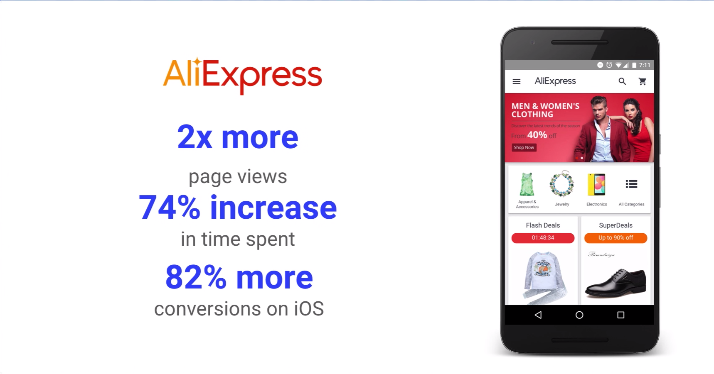¿Porqué hacer una PWA?
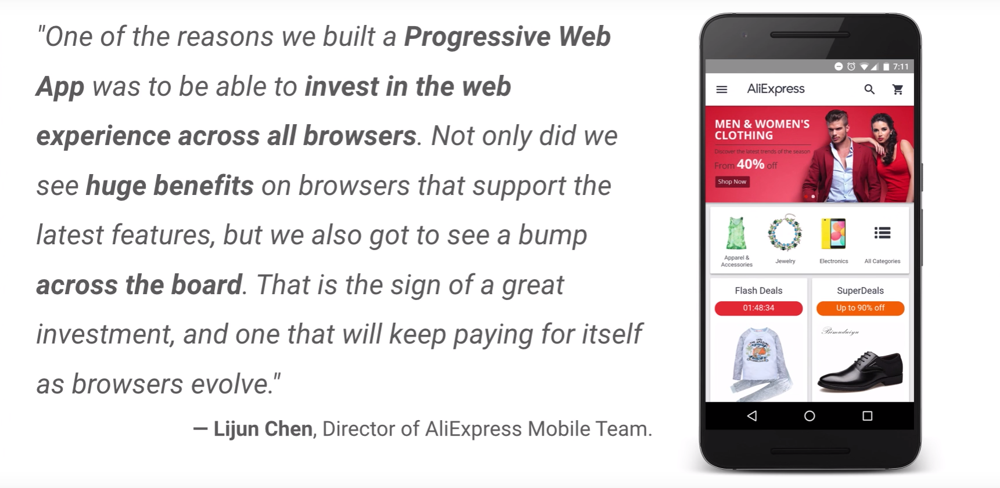¿Porqué hacer una PWA?
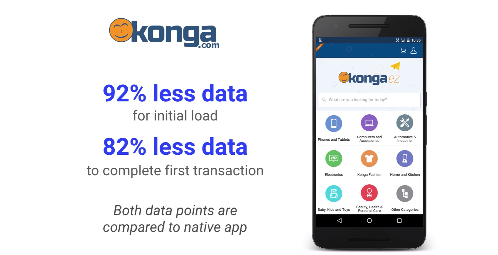¿Porqué hacer una PWA?
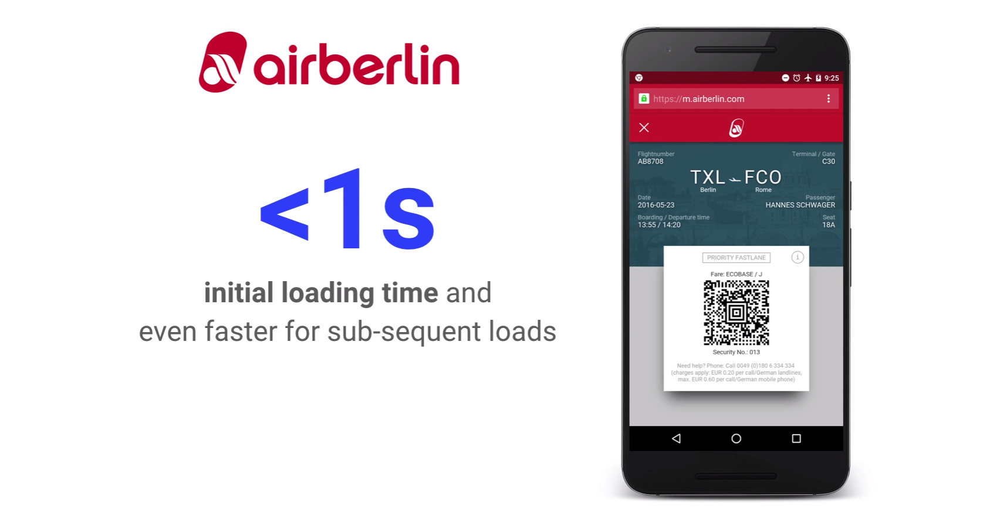¿Porqué hacer una PWA?
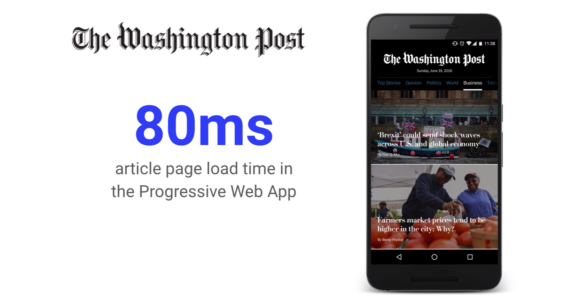¿Porqué hacer una PWA?
¿Porqué hacer una PWA?
Herramientas de Desarrollo para PWA's
Herramientas de Desarrollo para PWA's

Herramientas de Desarrollo para PWA's

Herramientas de Desarrollo para PWA's

¿Qué puede hacer la web hoy?

Tecnologías Core PWA's
Tecnologías Core PWA's
Responsive Design
Responsive Design
Buenas prácticas de CSS
Responsive Design
Maquetación Fluída
Nunca haga que los usuarios se desplacen horizontalmente
Responsive Design
Maquetación Fluída
Usa el Viewport
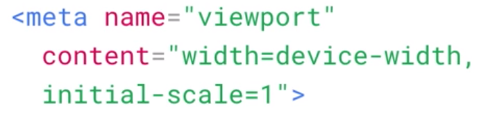Responsive Design
Multimedios Flexibles
Responsive Design
Multimedios Flexibles
Responsive Design
Mediaqueries
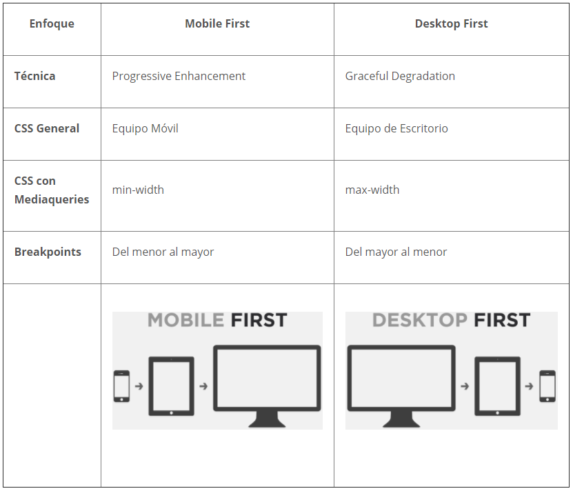Responsive Design
Breakpoints
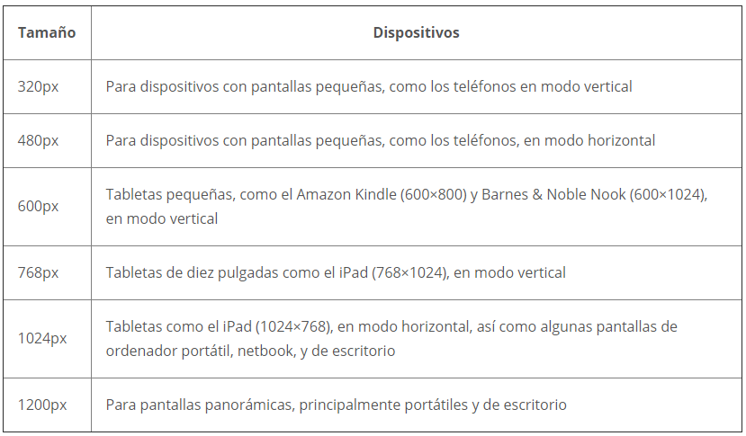Responsive Design
Mediaqueries con JavaScript
App Shell Architecture

App Shell Architecture
Es el mínimo HTML, CSS y JavaScript que se requiere para alimentar la interfaz de usuario de una PWA y es uno de los componentes que garantiza un buen rendimiento fiable.
App Shell Architecture
Su primera carga debe ser extremadamente rápida e inmediatamente almacenada en caché.
Separa la infraestructura de la aplicación
(la interfaz de usuario, de los datos).
App Shell Architecture
Patrones y estrategias de almacenamiento en caché
App Shell Architecture
Server-side Rendering (SSR)
App Shell Architecture
Client-side Rendering (CSR)
App Shell Architecture
Content First
App Shell Architecture
Content First
Flexbox
Grid
Manifest.json
El manifiesto es un archivo JSON que permite controlar cómo se muestra la PWA al usuario en áreas donde normalmente ven apps nativas, además indica su apariencia al iniciarse.
Manifest.json
Especifica entre algunas cosas:
Manifest.json
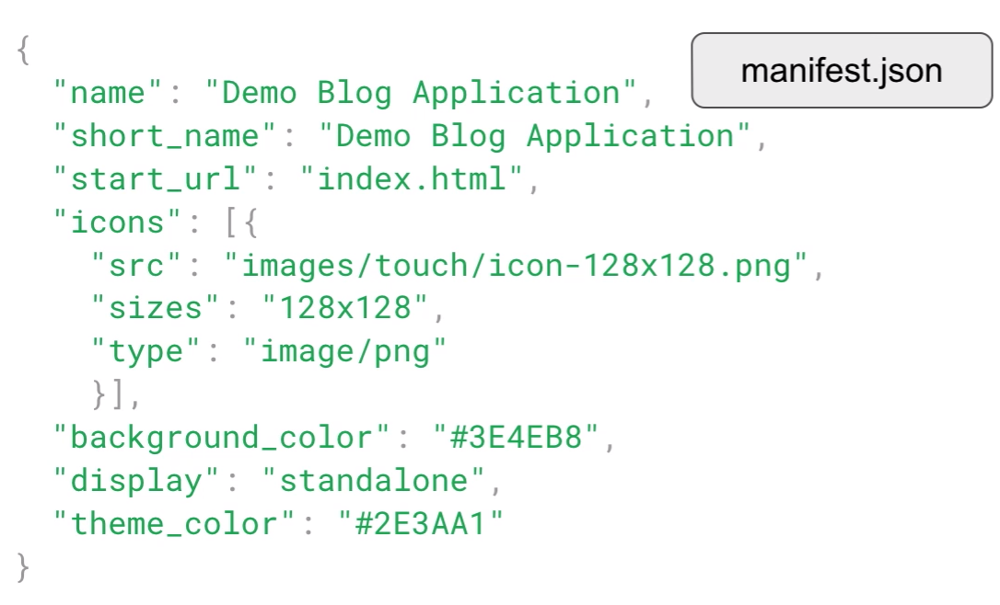Manifest.json
Service Worker
Son secuencias de comandos que el navegador ejecuta en segundo plano. Te permiten acceder a funciones que no requieren interacción con el usuario, como notificaciones push, sincronización en segundo plano y experiencias sin conexión.
Service Worker
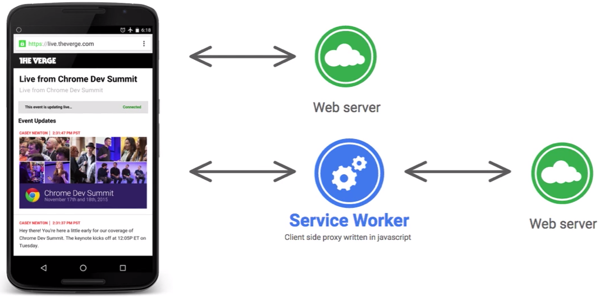Service Worker
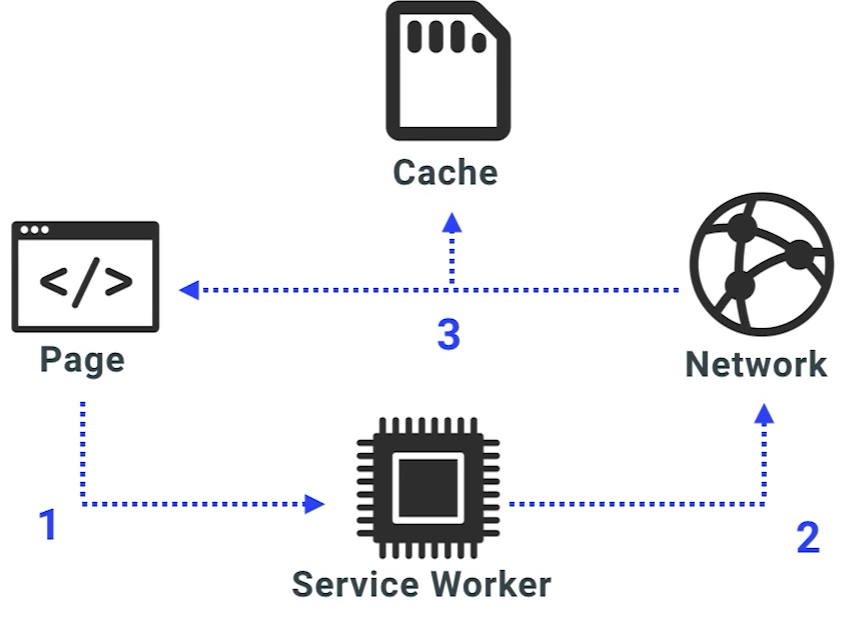Service Worker
Durante el desarrollo, podrás usar el service worker a través de localhost, pero para implementarlo en un sitio deberás configurar HTTPS en tu servidor.
Con los service workers puedes tomar el control de una conexión, y crear y filtrar respuestas, por ello es que requiere HTTPs para evitar malos usos y manipulaciones en la red.
Service Worker
Ciclo de Vida
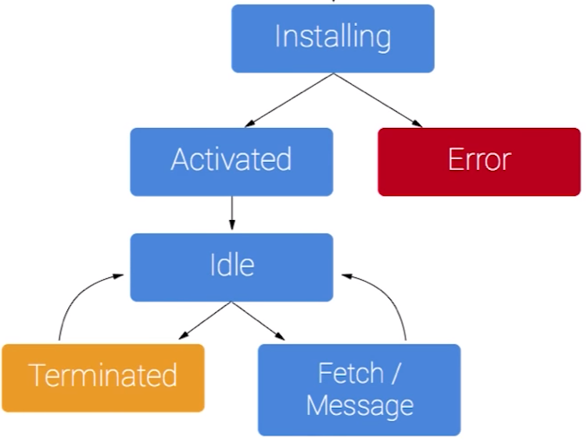Service Worker
Entonces:
Service Worker
Storage & Offline Support
Se utiliza para almacenar activos que tienen una url
| Eventos del SW | Acciones del Cache |
|---|---|
| install | Se crea el cache y se inicializan los activos |
| activate | Actualiza el cache |
| fetch | Recupera activos, del cache, de la red o de cualquier otro medio disponible |
Storage & Offline Support
Sirviendo activos del Cache
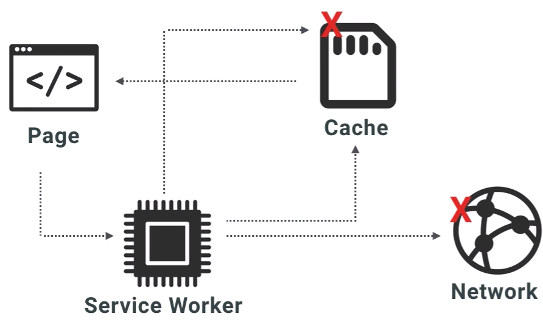Storage & Offline Support
Push & Notifications API
Push & Notifications API